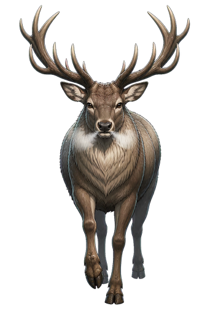

覚えることは3つ ── 間合い・地形・敵。
敵は撃つ前に必ず赤で知らせます。乱数はないので、見てから避けられます。
敵の波が3回きます。3つとも凌げば勝ち。自分の駒が全部たおれるか、自陣の砦が落ちると負けです。
京都丹波の史実札から。強さは年代と市町で決まります。
5面。地形がちがうので、通れる道も射線も変わります。
自陣に砦として立ちます。落とされたら負けです。
① 敵が動いて、赤で予告する → ② 自分の3枚を動かす → ③ 予告した赤マスだけが攻撃される
この順番が崩れることはありません。赤いマスから出ていれば当たりません。逆に、赤の上に立ったまま手番を終えると必ず当たります。
黒が敵、赤が「次に攻撃されるマス」、青枠が自分の駒。この形なら赤に入っていないので当たりません。
駒を押すと、青いマスが「動ける先」、赤い枠の敵が「そこから攻撃できる相手」です。動いてから攻撃もできます。1ラウンドに、1駒つき1回だけ。
動かす駒がなくなったら「この手番を終える」を押します。
たとえば保津峡は、川が盤を割ります。撃てるのに近づけない ── 渡れる瀬は三つだけ。
黒枠の3マスが川で、渡れません。青枠の3マスが瀬 ── ここだけ向こう岸へ渡れます。

鹿まっすぐ間合いを詰めてきます。となりに来られると、四方が危ない。実際に人が亡くなった災害の出来事は、駒にも敵にもしていません。
編成の札の右上にある「裏」と、勝負のあとに並ぶ3枚を押すと、その出来事の解説と出典、行ける場所が読めます。そこから年表のその年へ跳べます。
札の年代が古いほど硬くて鈍く、新しいほど速い。市町が間合いを決めます。だから「なぜこの札が強いのか」は史実で説明がつきます。勘で振った数字はひとつもありません。
砦は、勝つと3段まで、実際にその寄り処へ行くと5段まで育ちます（訪問で育つ仕組みは準備中です）。